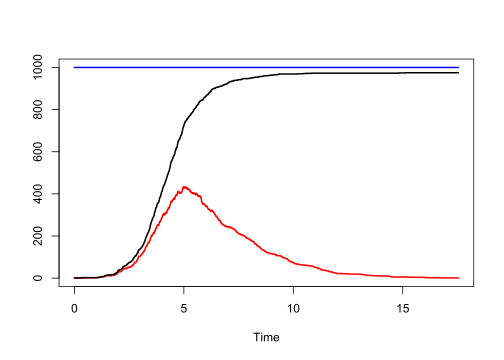

29 Survival analysis
29.1 Time-to-event data

Let say when you were born, someone started the clock, and stop when you die. The time record on the clock is time-to-event.
If this person is bored, they stop the clock before you die, so the time to when you die is unknown. This is called censoring.
29.2 Cumulative density \(F(t)\)
Survival analysis is about time-to-event, so we start with probability of the time-to-event. \(F(t)\) is the probability that the event has occurred on or before time \(t\) (the time-to-event \(T\) is less than or equal to when we stop the clock at \(t\)).
\[F(t) = \mathbb{P}(T \leq t)\]
29.3 Probability density \(f(t)\)
\(f(t)\) is the instantaneous rate that an event will occur at exactly time \(t\).
\[f(t) = \frac{dF(t)}{dt}\]
Multiply \(f(t)\) by a small interval \(\Delta t\) to get an actual probability.
29.4 Survival function \(S(t)\)
\(S(t)\) is the probability that a subject is still event-free at time \(t\). In other words, the time-to-event \(T\) (when you die) is larger than a chosen time point \(t\) (when you stop the clock).
\[S(t) = \mathbb{P}(T > t)\]
Let say on the date you were born, 100 babies were also born at the hospital. Someone started the clock. Now after 30 years, 80 are still alive.
\[S(\text{30 years}) = \frac{80}{100} = 0.8\]
29.4.1 \(S(t)\) and \(F(t)\)
\[\begin{cases} S(t) = \mathbb{P}(T > t) \\ F(t) = \mathbb{P}(T \leq t) \end{cases}\]
Therefore,
\[S(t) = 1 - F(t)\]
29.4.2 \(S(t)\) and \(f(t)\)
\[f(t) = \frac{dF(t)}{dt} = \frac{d[1 - S(t)]}{dt} = \frac{-dS(t)}{dt}\]
29.5 Hazard function
\(h(t)\) is the instantaneous event rate (events per unit time, not a probability) at time \(t\), given the subject has survived up to \(t\).
\[h(t) = \frac{f(t)}{\mathbb{P}(T > t)} = \frac{f(t)}{S(t)}\]
Think of it as: among those still alive at time \(t\), how many are expected to experience the event per unit time in the next instant.
On the date you were born, 100 babies were also born at the hospital. Someone started the clock. Now after 30 years, 80 are still alive (\(S(\text{30 years}) = 0.8\)). Suppose the density at 30 years is \(f(\text{30 years}) = 0.01 \text{ year}^{-1}\) (1 % chance of dying in the next year for an individual).
\[h(\text{30 years}) = \frac{f(\text{30 years})}{S(\text{30 years})} = \frac{0.01}{0.8} = 0.0125\]
That is, the instantaneous risk at age 30 is 1.25% per year.
Or we can think of it as: 1 person is expected to die among 80 people still alive at age 30.
\[h(\text{30 years}) = \frac{1}{80} \text{per year} = 0.0125 \text{ year}^{-1}\]
29.6 Hazard, rate, incidence
They are the same word, using in different fields, hazard = rate = incidence:
- Rate: number of new events that occur during specified time period.
- Incidence: when the event is a disease, it is called incidence.
- Hazard: in survival analysis, it is called hazard.
29.7 IDM and survival analysis
Much of infectious disease modelling is derived from, or at least shares, key concepts with survival analysis (Hay et al., 2024).

In the SIR model, susceptibles become infectious at the force of infection \(\lambda(t)\). In other words, \(\lambda(t)\) is the instantaneous rate at which a still‐susceptible person becomes infected at time \(t\).
This is exactly the definition of a hazard function in survival analysis.
\[ \lambda(t)=h_{\text {infection }}(t)=\frac{\text { density of new infections at } t}{\text { probability of still being susceptible at } t} \]
So the jump from S to I shares the same mathematics as any “time-to-event” clock, here the “event” is infection instead of death.
29.7.1 Illustration
Below is a cohort of \(N\) individuals, each running their own private “infection clock” with constant hazard \(\lambda\). When a person’s clock fires, they flip from susceptible (blue) to infected (red) — exactly the role “death” plays in survival analysis.
Two equivalent views of the same process appear on the right:
- The survival curve \(S(t)=\mathbb{P}(T>t)\), i.e. the probability an individual is still event-free.
- The proportion susceptible in the cohort, \(\dfrac{S(t)}{N}\), which is the SIR variable when \(\lambda\) is the force of infection.
For constant hazard, the empirical step curve hugs the analytic \(e^{-\lambda t}\) — the survival function and the solution of \(\dot S = -\lambda S\) are the same object.
| Survival analysis | Infectious disease modelling | Explanation |
|---|---|---|
| Survival function \(S(t)=P(T>t)\) | Proportion susceptible in a cohort model | At each moment, the curve of remaining susceptibles mirrors a survival curve. |
| Hazard ratio | Relative risk under intervention | Compare two forces of infection (e.g. with vs without masks) → HR = \(\lambda_1/\lambda_0\). |
| Competing risks | Multiple exit routes from S (e.g. infection by strain A vs strain B) | Each strain has its own hazard; the sub-hazards sum to the total risk of leaving S. |
| Cumulative hazard \(H(t)=\int_0^t h(u)\,du\) | Attack rate over time | \(1-\exp[-H(t)]\) gives the cumulative proportion ever infected—often called the final size in a closed SIR outbreak. |
| Time-varying covariate in Cox model | Seasonal contact pattern \(\beta(t)\) | A sinusoidal \(\beta(t)\) modulates the hazard exactly like a time-varying coefficient in survival analysis. |
| Generation-time / waiting-time density \(f(t)\) | Serial interval distribution | The PDF of when an infectee infects others drives renewal-equation models just as \(f(t)\) drives failure timing. |
| Mixture cure model | Partial immunity / vaccination | A fraction \(\pi\) is “cured” (fully immune); the rest face the usual infection hazard. |
| Left truncation (enter study late) | Seeding an epidemic | Only individuals present at time \(t_0\) are modelled; earlier infections are truncated away. |
library(deSolve)
parameters <- c(beta = 2, gamma = 0.5) # parameter values
state <- c(S = 0.999, I = 0.001, R = 0) # starting values for the system
# Definition of the system of ODE's
SIR_ODE <- function(time, state, parameters) {
with(as.list(c(state, parameters)), {
# rate of change
dS <- -beta * S * I
dI <- beta * S * I - gamma * I
dR <- gamma * I
# return the rate of change
list(c(dS, dI, dR))
})# end with(as.list ...
}
# Now run the system for some time, using the ode() function of {deSolve}
times <- seq(0, 12, by = 0.01)
out <- ode(
y = state,
times = times,
func = SIR_ODE,
parms = parameters
)
out <- as.data.frame(out)
plot(
out$time,
out$I,
type = "l",
lwd = 2,
xlab = "Time",
ylab = "",
ylim = c(0, 1),
col = "red"
)
lines(out$time, out$I + out$R, type = "l", lwd = 2)
lines(
out$time,
out$I + out$R + out$S,
type = "l",
lwd = 2,
col = "blue"
)
legend(
12,
0.8,
c("I", "I + R", "I + R + S"),
lwd = 2,
col = c("red", "black", "blue"),
bty = "n",
xjust = 1
)
gen_SIR <- function(beta, gamma, S0, I0, R0) {
# Start with S0 susceptible, I0 infected and R0 recovered, at time t=0
T <- 0
S <- S0
I <- I0
R <- R0
n <- S0 + I0 + R0
dfr <- matrix(0, 2 * n, 5)# time, S, I, R, ev (1 for infection, 0 for recovery)
dfr[1, ] <- c(T, S, I, R, 1)
i <- 1
while (I > 0) {
# run until no more infecteds left
i <- i + 1
# currently I infected, S susceptibles, determin rates
rate_inf <- beta * I * S / n
rate_rem <- gamma * I
rate_tot <- rate_inf + rate_rem
# time point of new event
Tev <- rexp(1, rate_tot)
# determine type of event
ev <- sample(0:1, size = 1, prob = c(rate_rem, rate_inf))
T <- T + Tev
if (ev == 1) {
# new infection
S <- S - 1
I <- I + 1
} else {
# removal
I <- I - 1
R <- R + 1
}
dfr[i, ] <- c(T, S, I, R, ev)
}
dfr <- as.data.frame(dfr)
names(dfr) <- c("T", "S", "I", "R", "ev")
return(dfr)
}
n <- 1000
# Parameters
beta <- 2
gamma <- 0.5
# Generate
set.seed(2023)
dfr <- gen_SIR(beta,
gamma,
I0 = 1,
S0 = n - 1,
R0 = 0)
dfr <- subset(dfr, T > 0 |
I > 0)# remove rows where I=0, except for T=0
dfr2023 <- dfr # save for later
head(dfr, n = 12)plot(
dfr$T,
dfr$I,
type = "s",
lwd = 2,
xlab = "Time",
ylab = "",
ylim = c(0, n),
col = "red"
)
lines(dfr$T, dfr$I + dfr$R, type = "s", lwd = 2)
lines(
dfr$T,
dfr$I + dfr$R + dfr$S,
type = "s",
lwd = 2,
col = "blue"
)
legend(
5,
0.8,
c("I", "I + R", "I + R + S"),
lwd = 2,
col = c("red", "black", "blue"),
bty = "n",
xjust = 1
)
dfr <- dfr2023 # reuse the first data with seed 2023
n <- dfr$S[1] + dfr$I[1] + dfr$R[1]
Ntau <- sum(dfr$ev[-1]) # total number of new infections
Ndfr <- nrow(dfr)
dfr$length_int <- c(dfr$T[-1] - dfr$T[-Ndfr], 0)
intSI <- sum(dfr$S * dfr$I * dfr$length_int)
betahat_MLE <- Ntau / (intSI / n)
betahat_MLE[1] 1.987948